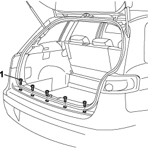
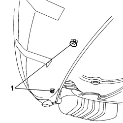
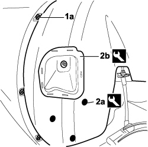
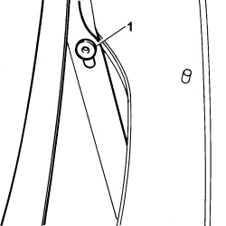
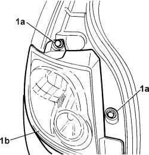
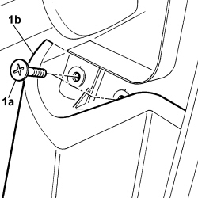
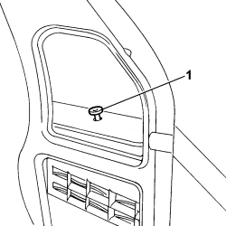
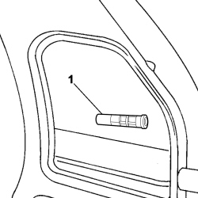
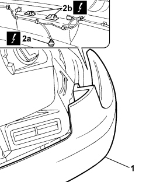
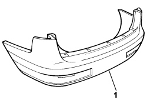

7210E66 R.R. REAR BUMPER
- Path
- Procedures > 72 PANELS AND FRAMES > 7210 REMOVING-REFITTING > 7210E EXTERNAL PARTS > 7210E66 R.R. REAR BUMPER
- Kind
- repair procedure (removal / refitting; the operation number is the code)
- Applies to
- all engines; all production periods
- Interactive page
- https://sloeber94.github.io/elrnDB-fCrm/en/#/194001252
Applies to: all engines; all production periods
 Removing
Removing
 Refitting
Refitting- Turn the ignition key to the OFF position.
- Open the bonnet.
- Disconnect the negative battery terminal.
Description | Connector | |
|---|---|---|
BATTERY |
1. Open the passenger compartment tailgate and unscrew the five upper bolts.

Applies to: all engines; all production periods
1. Unscrew the two bolts under the beam.

Applies to: all engines; all production periods
- Working on both sides:
Op. 4450B13 REAR WHEELS (TWO) - R.R
1. Unscrew the bolts (1a) securing the wheel arch to the inner edge of the wing on the bumper.
2. Using the special tool, release the three retaining buttons (2a) and the wheel arch retainer (2b).
Tool | Description | Function | Validity |
|---|---|---|---|
1878077000 | Knife | Retainer removal |

Applies to: all engines; all production periods
- Partly move aside the wheel arch to gain access to the bolt.
1. Undo the retaining bolt.

Applies to: all engines; all production periods
1. Unscrew both bolts (1a) securing the outer tail-light (1b) and prise out of its seat without disconnecting the connectors.

Applies to: all engines; all production periods
1. Undo the two bolts (1a) fixing the bumpers (1b) to the vehicle.

Applies to: all engines; all production periods
Op. 7040B22 LUGGAGE COMPARTMENT/LOAD PLATFORM MOULDING - R+R
Op. 7040B26 LOAD PLATFORM COVER BLIND - R+R
Op. 7040B42 PROTECTION GRILLE FOR ANIMAL TRANSPORT - R and R
Op. 7040G46 LOAD COMPARTMENT COURTESY LIGHT - R and R
Op. 7050A47 SIDE PANEL ONE OF REAR SEAT SQUAB LH OR RH R R
Op. 7040B24 LOAD COMPARTMENT TOP TRIM (ONE) - R+R
Op. 7040B10 LOAD PLATFORM (LUGGAGE PLATFORM) TRIM - R+R
Op. 7040B18 LOAD COMPARTMENT LOAD PLATFORM SIDE TRIM ONE LH OR RH - R.R
Op. 5570T95 SUBWOOFER WITH AMPLIFIER BUILT INTO SOUND SYSTEM - R.R.
1. Undo the bolt fixing the bumper at the side.

Applies to: all engines; all production periods
1. Unscrew the bolt with the extension in the box section.

Applies to: all engines; all production periods
1. Move aside the bumper to gain access to the number plate light and parking sensor connector.
2. Disconnect the parking sensor connector (2a) and withdraw the bulb holder from the number plate lights (2b).
Description | Connector | |
|---|---|---|
2a | PARKING SENSOR COUPLING |
Description | Connector | |
|---|---|---|
2b | LEFT NO. PLATE LIGHT |
Description | Connector | |
|---|---|---|
2b | RIGHT NO. PLATE LIGHT |

Applies to: all engines; all production periods
1. Disconnect the bumper from the vehicle.

Applies to: all engines; all production periods
Refitting
Removing- Check that the bumper is not damaged.
- Position the bumper in the housing.
- Insert the bulb holder in the number plate lights.
Description | Connector | |
|---|---|---|
LEFT NO. PLATE LIGHT |
Description | Connector | |
|---|---|---|
RIGHT NO. PLATE LIGHT |
- Connect the electrical connection for the parking sensors.
Description | Connector | |
|---|---|---|
PARKING SENSOR COUPLING |
Working on both sides:
- Tignten the bolt with extension in the box section.
- Tignten the side bumper bolt in the box section.
Op. 5570T95 SUBWOOFER WITH AMPLIFIER BUILT INTO SOUND SYSTEM - R.R.
Op. 7040B18 LOAD COMPARTMENT LOAD PLATFORM SIDE TRIM ONE LH OR RH - R.R
Op. 7040B10 LOAD PLATFORM (LUGGAGE PLATFORM) TRIM - R+R
Op. 7040B24 LOAD COMPARTMENT TOP TRIM (ONE) - R+R
Op. 7050A47 SIDE PANEL ONE OF REAR SEAT SQUAB LH OR RH R R
Op. 7040G46 LOAD COMPARTMENT COURTESY LIGHT - R and R
Op. 7040B42 PROTECTION GRILLE FOR ANIMAL TRANSPORT - R and R
Op. 7040B26 LOAD PLATFORM COVER BLIND - R+R
Op. 7040B22 LUGGAGE COMPARTMENT/LOAD PLATFORM MOULDING - R+R
- Tighten both bolts in the outer tail-light seat.
- Position the outer tail-light in its seat and tighten the bolts.
- Tighten the bumper side bolt under the wheel arch.
- Use an appropriate tool to fit the wheel arch in the retaining bell housing.
Tool | Description | Function | Validity |
|---|---|---|---|
1878077000 | Knife | Retainer removal |
- Attach the wheel arch retaining studs.
Op. 4450B13 REAR WHEELS (TWO) - R.R
- Tighten the two bolts under the beam.
- Tighten the five upper retaining bolts.
- Connect the negative battery terminal once again.
Description | Connector | |
|---|---|---|
BATTERY |
Topics linked from this page (16)
- 4450B13 REAR WHEELS (TWO) - R.R
- 5570 ACCESSORIES
- 5570T95 SUBWOOFER WITH AMPLIFIER BUILT INTO SOUND SYSTEM - R.R.
- 5580C AIR BAG SYSTEM
- 7040B10 LOAD PLATFORM (LUGGAGE PLATFORM) TRIM - R+R
- 7040B18 LOAD COMPARTMENT LOAD PLATFORM SIDE TRIM ONE LH OR RH - R.R
- 7040B22 LUGGAGE COMPARTMENT/LOAD PLATFORM MOULDING - R+R
- 7040B24 LOAD COMPARTMENT TOP TRIM (ONE) - R+R
- 7040B26 LOAD PLATFORM COVER BLIND - R+R
- 7040B42 <x>PROTECTION GRILLE FOR ANIMAL TRANSPORT - R&R</x>
- 7040G46 <x>LOAD COMPARTMENT COURTESY LIGHT - R&R</x>
- 7050A47 SIDE PANEL ONE OF REAR SEAT SQUAB LH OR RH R R
- A001 BATTERY
- D089 PARKING SENSOR COUPLING
- F050 LEFT NUMBER PLATE LIGHT
- F051 RIGHT NUMBER PLATE LIGHT